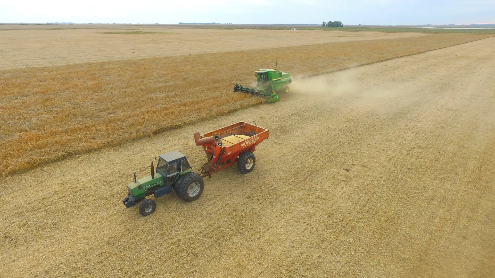

Mercado agro · Argentina
Equipos, insumos y servicios para seguir produciendo.
Publicaciones con precio o modalidad, ubicación, responsable y próximo paso.
30
Operaciones disponibles ahora

Cosecha y descarga de grano · Campo argentino
01
Maquinaria y campos
Activos de alto valor
02
Insumos
Precio, unidad y stock
03
Servicios
Cobertura y modalidad
04
Logística
Origen, destino y equipo